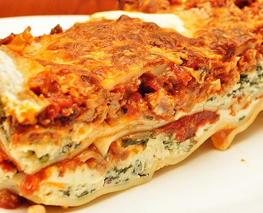

Home
Easy Lasagna
Submitted by Joanie Heger on allrecipes

Description
An easy lasagna recipe that saves me lots of time. Making perfect homemade lasagna doesn't have to be tedious. This top-rated easy lasagna recipe comes together quickly with a relatively short ingredient list.
Ingredients
For 12 servings
- 1 pound lean ground beef
- 1 (32 ounce) jar spaghetti sauce
- 32 ounce cottage cheese
- 3 cups shredded mozzarella cheese, divided
- 2 eggs
- 1/2 cup grated Parmesan cheese
- 2 teaspoons dried parsley
- Salt to taste
- Ground black pepper to taste
- 9 lasagna noodles
- 1/2 cup of water
Steps
- Gather all ingredients and preheat the oven to 350 degrees F (175 degrees C).
- Heat a large skillet over medium-high heat. Cook and stir ground beef in the hot skillet until browned and crumbly, 8 to 10 minutes. Drain and discard grease. Stir in spaghetti sauce and simmer for 5 minutes.
- Combine cottage cheese, 2 cups of mozzarella cheese, eggs, 1/2 of the grated Parmesan cheese, dried parsley, salt, and pepper in a large bowl.
- Spread 3/4 cup of sauce in a 9x13-inch baking dish. Cover with 3 uncooked lasagna noodles, 1 3/4 cups of cheese mixture, and 1/4 cup sauce; repeat layers once more. Top with remaining 3 noodles, sauce, mozzarella, and Parmesan cheese. Pour 1/2 cup water along the edges of the dish. Cover tightly with aluminum foil.
- Bake in the preheated oven for 45 minutes. Uncover and bake for an additional 10 minutes. Let stand 10 minutes before serving.
- Serve and enjoy!
Nutrition Facts
Serving Per Recipe: 12
- Calories: 377
- Total Fat: 17g
- Saturated Fat: 8g
- Cholesterol: 90mg
- Sodium: 870mg
- Total Carbohydrate: 26g
- Dietary Fiber: 3g
- Total Sugars: 8g
- Protein: 29g
- Vitamin C: 2mg
- Calcium: 332mg
- Iron: 2mg
- Potassium: 463mg
* Nutrient information is not available for all ingredients. Amount is based on available nutrient data.
(-) Information is not currently available for this nutrient. If you are following a medically restrictive diet, please consult your doctor or registered dietitian before preparing this recipe for personal consumption.